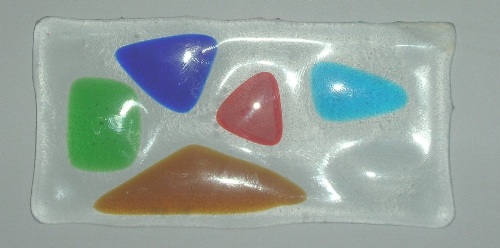
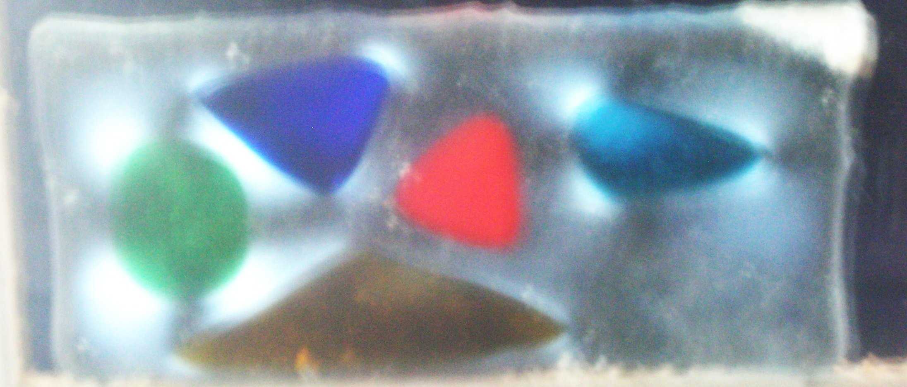
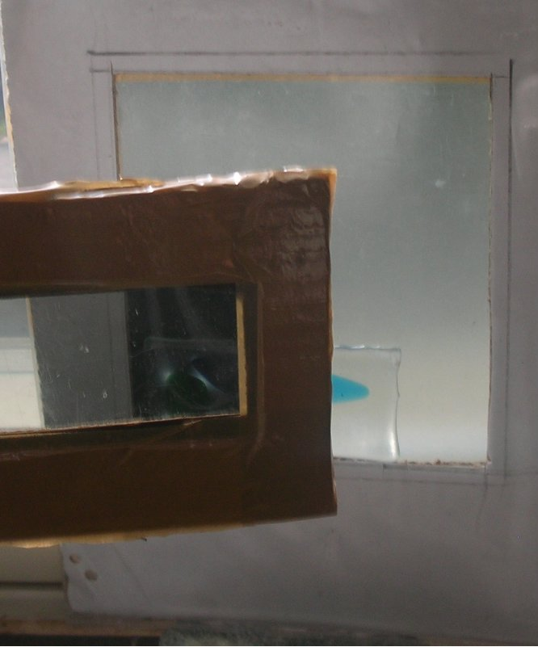
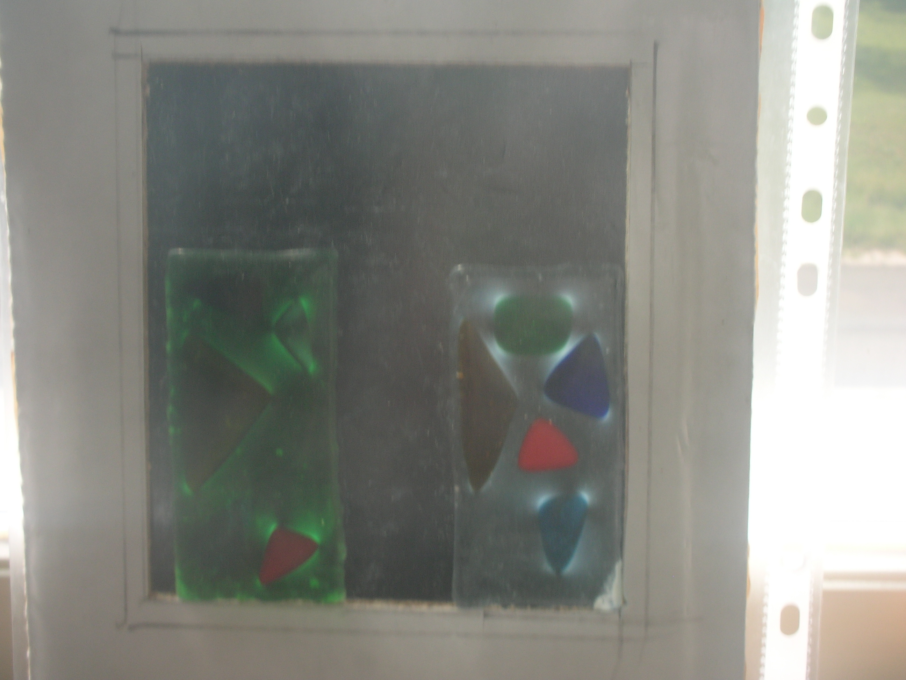

|  Fusing test samples on clear |
 Polarisation effect on the test piece.. |
|  In this picture the test sample is placed between the filters. Note how the filters block all the light. The stress is the sample is seen as light halo. |
 In this picture samples of the same glass are fused on two different backgrounds. On the right is the previous test piece. On the left the samples are fused on a green glass. The blues fit, but the red has a definive halo. The green base makes it look darker but it is there. |